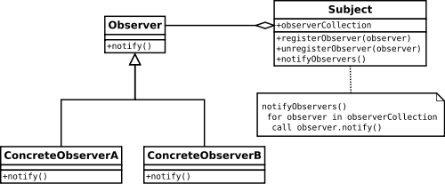
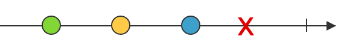
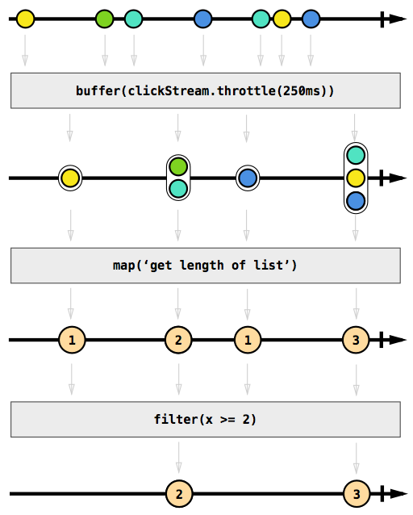

Une introduction à
ReactiveX
ou la programation Reactive
Featuring RxJS & Angular
ReactiveX
- et plein d'autres...
 ReactiveX
ReactiveX
Une librairie de flux reactifs qui permet de travailler avec des flux de données asynchrones.
Le Pattern Observer
Un objet, nommé subject, maintient une liste d'Observers et les notifient à chaque changement d'état en appelant une de leurs méthodes.
Anatomie d'un Observer

Anatomie d'un Observable RxJs
function Observable() { }
/**
* @param {Observer} observer
* @returns {Disposable}
*/
Observable.prototype.subscribe = function (observer) { ... }
function Observer() { }
Observer.prototype.onNext = function (value) { ... }
Observer.prototype.onError = function (error) { ... }
Observer.prototype.onCompleted = function () { ... }
/**
* @param {Function} onNext
* @param {Function} onError
* @param {Function} onCompleted
* @returns {Disposable}
*/
Observable.prototype.subscribe = function (onNext, onError, onCompleted) { ... }
Anatomie d'un flux
Anatomie d'un flux IRL
Opérateurs
- map
- reduce
- filter
- scan
- flatMap
- merge
- zip
- switch
- et plein d'autres...
- plein plein d'autres
Visualization avec des
Marble Diagrams
Filter
Map
Debounce
Merge
zip
count
reduce
Hot vs. Cold Observables
Chaque soubscription
reçoit le meme flux
reçoit le meme flux
Les flux
sont dupliqués
sont dupliqués
const source = Rx.Observable
.interval(1000)
.take(5)
source.subscribe(
(x) => print("x = " + x)
);
Rx.Observable
.fromEvent(document, 'keyup')
.map(event => event.keyCode)
.filter(key => key > 47 && key < 91)
.map(key => String.fromCharCode(key))
.subscribe(key =>
print(`You pressed: ${key}`))
clickCount$

const click$ = Rx.Observable
.fromEvent(document, 'click')
const clickCount$ = click$
.buffer(() => click$.debounce(500))
.map(events => events.length)
clickCount$
.filter(count => count == 1)
.subscribe(() =>
print('Un click'))
clickCount$
.filter(count => count == 2)
.subscribe(() =>
print('Wow, un doubleclick!'))
clickCount$
.filter(count => count > 2)
.subscribe(() =>
print('Omg, triple click!!!'))
Angular
Dépend d'RxJS
utilise la version 6 (encore en beta)
AsyncPipe & OnPush
import {ChangeDetectionStrategy} from "angular/core";
@Component({
selector: "list",
changeDetection: ChangeDetectionStrategy.OnPush,
template: `<h4>{{ title | async }}</h4>
<ul>
<li *ngFor="let item of items | async">{{ item }}</li>
</ul>`
})
export class List {
@Input() title: Observable<string>;
@Input() items: Observable<string[]>;
}
DIY Observable
class Autocomplete implements OnInit {
public search: string;
public search$: Subject<string> = new Subject();
public suggestions: Observable<string[]>;
constructor(private github: GithubSearch) {}
ngOnInit () {
this.search$.pipe(
debounceTime(200),
map(keyword => keyword.trim()),
filter(keyword => keyword.length > 0),
distinctUntilChanged(),
map(keyword => this.github.searchUsers(keyword)),
map(result => this.suggestions = result),
).subscribe();
}
onSearchChange(event) {
this.search$.next(event);
}
}
Http
@Injectable()
export class GithubSearch {
private baseUrl = "https://api.github.com";
constructor(private http: HttpClient) {
}
searchUsers(term: string): Observable<string[]> {
return this.http
.get(this.baseUrl + "/search/users?q=" + term)
.pipe(
map((response: any) => response.items.map(item => item.login)),
share()
)
}
}
@Component({
selector: 'autocomplete',
template:
`<input [(ngModel)]="search" (ngModelChange)="onSearchChange($event)">
<ul>
<li *ngFor="let suggestion of suggestions | async">
{{ suggestion }}
</li>
</ul>`
providers: [GithubSearch],
changeDetection: ChangeDetectionStrategy.OnPush
})
export class Autocomplete implements OnInit {
public search: string;
public search$: Subject<string> = new Subject();
public suggestions: Observable<string[]>;
constructor(private github: GithubSearch) {}
ngOnInit () {
this.search$.pipe(
debounceTime(200),
map(keyword => keyword.trim()),
filter(keyword => keyword.length > 0),
distinctUntilChanged(),
map(keyword => this.github.searchUsers(keyword)),
map(result => this.suggestions = result),
).subscribe();
}
onSearchChange(event) {
this.search$.next(event);
}
}
Testing ?
// letters:
// -----a-----b-----c-----d-----e-----f-----|
const uppercase = letters.map(x => x.toUpperCase());
// -----A-----B-----C-----D-----E-----F-----|
const delayed = uppercase.delay(1000);
// ---------------A-----B-----C-----D-----E-----F-----|
const firstThree = delayed.take(3);
// ---------------A-----B-----C|
'-'
ou
'------'
'--a--b--|'
'--a--b--#'
'--(abc)-|'
export class ColorMixer {
static mix(r: Observable<boolean>,
y: Observable<boolean>,
b: Observable<boolean>,
mixingTime = 1000,
scheduler: IScheduler = async): Observable<Color> {
return Observable.combineLatest(
r.startWith(false),
y.startWith(false),
b.startWith(false),
(redOn, yellowOn, blueOn) => {
if (!redOn && !yellowOn && !blueOn) {
return Color.NONE;
} else if (redOn && !yellowOn && !blueOn) {
return Color.RED;
} else if (redOn && yellowOn && !blueOn) {
return Color.ORANGE;
} else if (!redOn && yellowOn && !blueOn) {
return Color.YELLOW;
} else if (!redOn && yellowOn && blueOn) {
return Color.GREEN;
} else if (!redOn && !yellowOn && blueOn) {
return Color.BLUE;
} else if (redOn && !yellowOn && blueOn) {
return Color.PURPLE;
} else {
return Color.BLACK;
}
})
.debounceTime(mixingTime, scheduler)
.startWith(Color.NONE)
.distinctUntilChanged();
}
}
describe('ColorMixer', () => {
describe('mix', () => {
it('should mix colors', () => {
const r = cold('--o--x--|', onOffMarbles());
const y = cold('--------|', onOffMarbles());
const b = cold('--o-----|', onOffMarbles());
const c = cold('x---p--b|', colorMarbles());
expect(mix(r, y, b)).toBeObservable(c);
});
});
});
// TestScheduler <3
function mix(r: Observable<boolean>,
y: Observable<boolean>,
b: Observable<boolean>) {
return ColorMixer.mix(r, y, b, 20, getTestScheduler());
}
function onOffMarbles() {
return {
o: true,
x: false
}
}
function colorMarbles() {
return {
x: Color.NONE,
r: Color.RED,
o: Color.ORANGE,
y: Color.YELLOW,
g: Color.GREEN,
b: Color.BLUE,
p: Color.PURPLE,
B: Color.BLACK
}
}